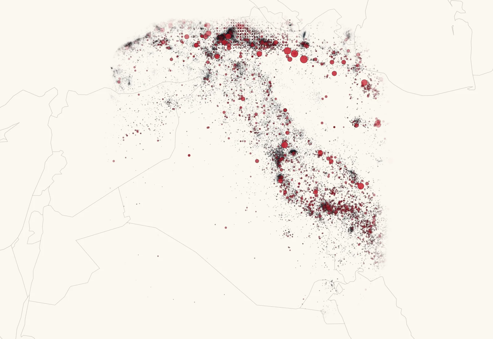

كيف يعمل Bumelerze
الطريقة وراء ما يعرضه Bumelerze: من أين تأتي البيانات، وكيف تُصنع الخرائط وتقديرات الأضرار، وأين حدودها.
- رُصد زلزالUSGS · EMSC · GEOFON
- قائمة واحدة مدمجة
- خريطة الاهتزاز
- تقدير الأضرار
- تقارير الشعور
من أين تأتي البيانات
تأتي الزلازل المباشرة من ثلاث شبكات: USGS و EMSC و GEOFON. تُدمج تقارير الزلزال نفسه، فيظهر مرة واحدة مع مصادره. يضم الكتالوج ١٥٠٬٠٧٢ زلزالًا منذ عام ٨٧٢، من ستة كتالوجات: ISC و ISC-GEM و EMME و Onur ٢٠١٧ و KISC و USGS.
- USGS
- EMSC
- GEOFON
عدة شبكات
مطابقة ودمج
زلزال واحد
مع ذكر المصادر

ما الذي يدخل في خريطة الاهتزاز
تُظهر خريطة الاهتزاز مدى قوة اهتزاز الأرض في كل مكان. يحسب Bumelerze خرائطه الخاصة للزلازل في كوردستان أو التي شُعر بها في العراق. وهو يجمع بين نماذج حركة الأرض ومحطات الرصد الزلزالي القريبة وتقارير الشعور من الناس. وحيث تقلّ المحطات، يكون للنماذج وزن أكبر.
- نماذج حركة الأرض
- محطات الرصد الزلزالي
- تقارير الشعور
- ٤
- ٥
- ٦
- ٧
- ٨
خريطة الاهتزاز
كيف يُصنع تقدير الأضرار
يجمع نموذج احتمالي بين الاهتزاز المرسوم على الخريطة والمباني في كل منطقة وفئات هشاشتها، من A إلى F. والنتيجة هي الأضرار المرجّحة للمباني. هذه تقديرات وليست يقينًا، لكوردستان والعراق، ودون أي أرقام للضحايا. تعطيك «سجّل مبناي» فئة منزلك أنت.
الاهتزاز على الخريطة
- A
- B
- C
- D
- E
- F
المباني وفئاتها
A الأكثر هشاشة، F الأقوى
- ١
- ٢
- ٣
- ٤
- ٥
الأضرار المرجّحة للمباني
درجة الضرر المتوقعة (IMS-25)
كيف تحسّن تقاريرك الخرائط
بعد الزلزال، اضغط على الصورة الأقرب لما شعرت به. لا حاجة إلى حساب. تُجمَّع التقارير حسب المنطقة في شدة مجتمعية تدخل في خريطة الاهتزاز، خاصة حيث تقلّ المحطات.
ضغطتك
مجمّعة حسب المنطقة
إلى خريطة الاهتزاز
ما الذي يأتي لاحقًا
إلى أين يتجه Bumelerze. لا شيء من هذا متاح بعد.
-
التنبيهات والإنذار المبكر
التنبيهات عن الزلازل المسجَّلة قربك، أو قرب مكان آخر تختاره، قادمة قريبًا. أما الإنذار المبكر، أي تحذير قبل ثوانٍ من وصول الاهتزاز القوي، فهو قيد الاختبار. وهو ليس تنبؤًا.
-
مبانٍ أكثر أمانًا
تعطي «سجّل مبناي» فئة هشاشة سريعة. أما التقييم التفصيلي للمبنى فسينظر عن قرب في طريقة بنائه ونقاط ضعفه. وستضع مراقبة سلامة المنشآت حسّاسات في مبانٍ في أنحاء كوردستان لمعرفة كيف تستجيب للاهتزاز.
-
كوردستان أكثر صمودًا
النماذج الأفضل للاهتزاز والأضرار، باستخدام محطات محلية وتقارير شعور وبيانات مبانٍ أكثر، تقرّب كل خريطة اهتزاز وكل تقدير مما حدث. والهدف: أناس يفهمون الخطر الذي يواجهونه ويعرفون ما يفعلون.